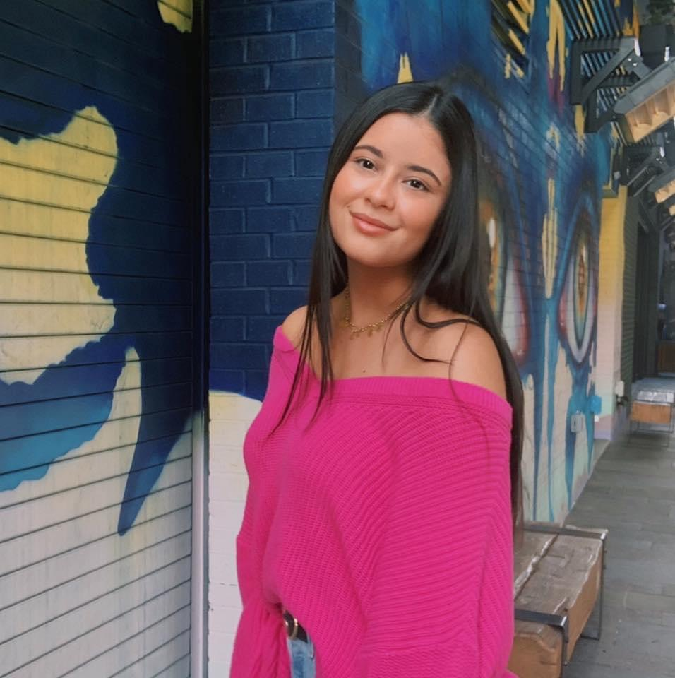

ABOUT ME!

Hi, I'm Serena!
For as long as I could remember, my Dad told me to find what you are passionate about and go after it with everything you have. After taking User-Centered Design my junior year of undergraduate school, I realized that I had a real passion for user experience design, and I haven't looked back since.
For me, User Experience design incorporates more than just creating a product, UX design is about constructing a cohesive set of experiences that meets users' needs. Each product/website/app should tell a story and creating that user journey is what I have a passion for. From developing the why, what, and how of product use to the development of wireframes and usability tests. User Experience design is a field where I get integrate my analytical and creative design skills to understand and address user needs.
One of my favorite quotes that I strive to live my life by states, "If today were the last day of my life, would I want to do what I'm about to do today." So when I am not spending time researching and creating new products/trends in User Experience Design, I love to spend my time cycling, watching college football, and taking my golden doodle Luna on walks.